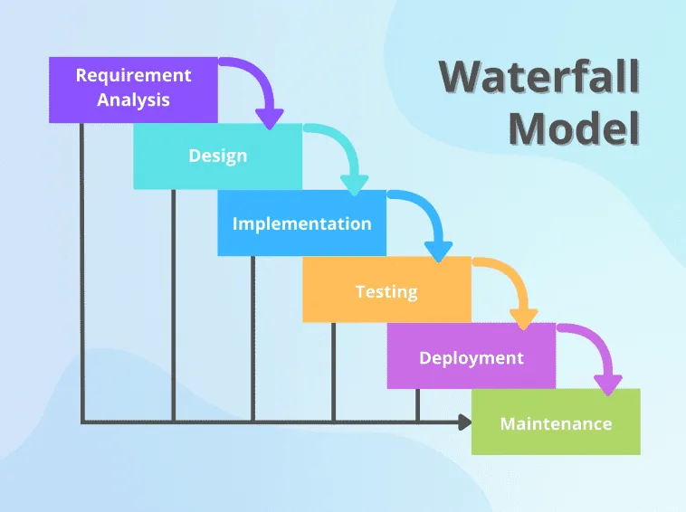
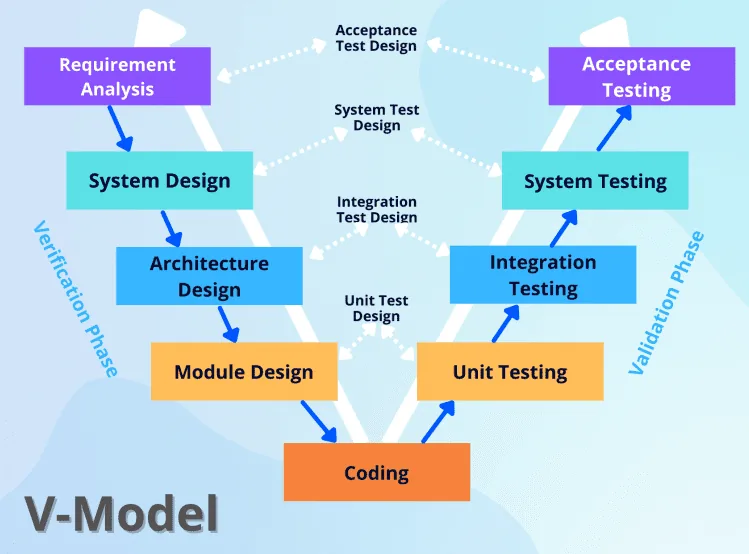
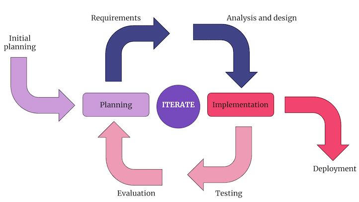
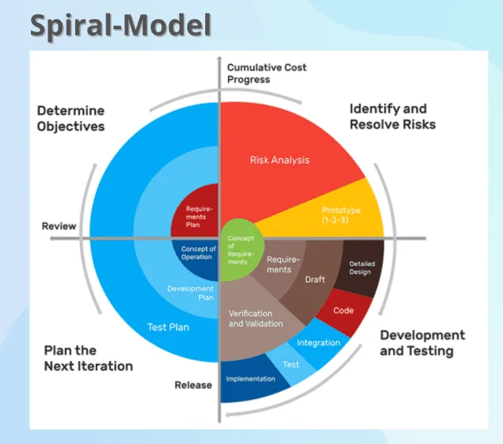
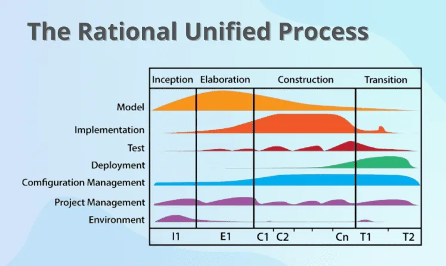
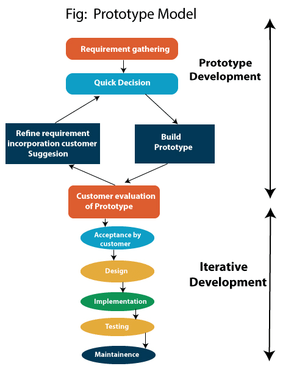
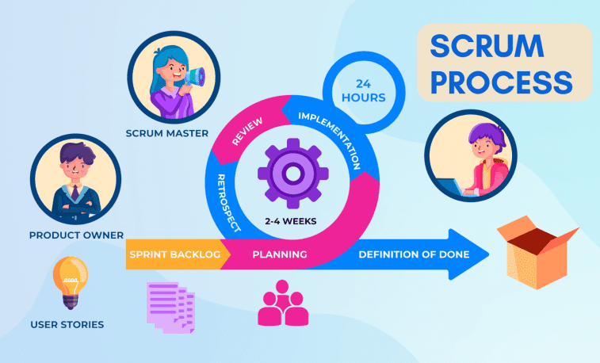
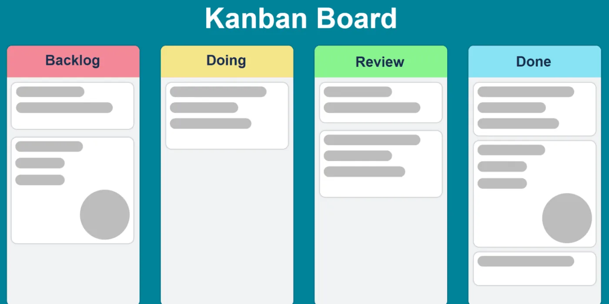
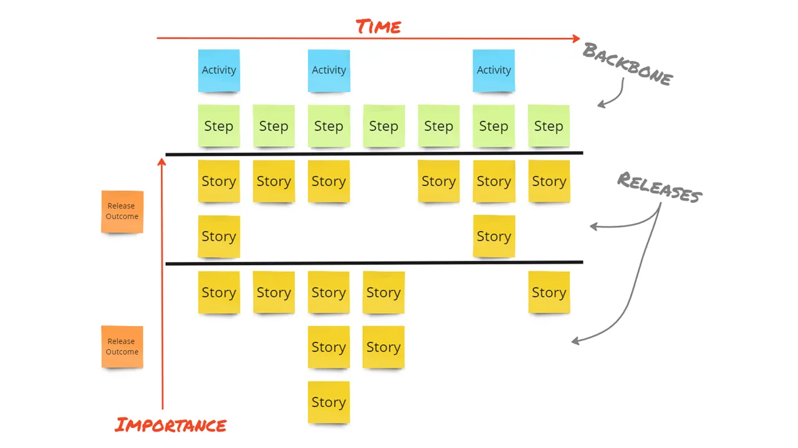
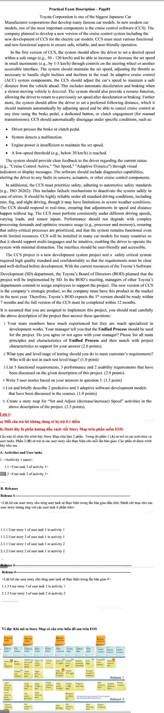

SWE201c · Introduction to Software Engineering
SWE201c
Chín mô hình phát triển phần mềm, tiêu chí chọn mô hình cho từng loại dự án, các mức kiểm thử, yêu cầu chức năng và phi chức năng — kèm hướng dẫn làm bài PE và FE.
Nếu thấy bài viết này hữu ích, hãy để lại 1 ⭐ trên GitHub của mình nhé! Cảm ơn mọi người ❤️
- Nội dung được biên soạn phù hợp với đề thi PE EOS hiện tại
- Link youtube học cho vui: Link YT SWE201c
- Lưu ý: Tài liệu này được chia sẻ miễn phí và không được phép sử dụng cho mục đích thương mại hoặc giảng dạy có thu phí. Các bạn có thể tự do sử dụng cho việc học tập và giảng dạy phi lợi nhuận. Chúc mọi người học tốt!
- Nếu phát hiện sai sót, vui lòng liên hệ tác giả
- Tài liệu này được tham khảo từ : 9 loại phát triển phần mềm được sử dụng hiện nay
Mục lục:
- 1. Các phương pháp phát triển phần mềm
- 2. Tiêu chí lựa chọn phương pháp
- 3. Các loại kiểm thử
- 4. Yêu cầu chức năng và phi chức năng
- 5. Hướng dẫn làm bài thi PE SWE201c
- 6. Hướng dẫn làm bài thi FE SWE201c
1. Các phương pháp phát triển phần mềm
A. 6 Mô hình SDLC cơ bản
#1. Mô hình thác nước (Waterfall)
Định nghĩa
Mô hình thác nước là phương pháp phát triển tuần tự, trong đó quá trình phát triển được xem như dòng chảy liên tục qua các giai đoạn: Phân tích yêu cầu → Thiết kế → Triển khai → Kiểm thử → Bảo trì.

Các giai đoạn chính
1. Giai đoạn phân tích
- Thu thập và làm rõ yêu cầu
- Phân tích tính khả thi
- Lập kế hoạch dự án
2. Giai đoạn thiết kế
- Thiết kế kiến trúc hệ thống
- Thiết kế chi tiết các module
- Thiết kế giao diện người dùng
3. Giai đoạn triển khai
- Lập trình các module
- Kiểm thử đơn vị
- Tích hợp các module
4. Giai đoạn kiểm thử
- Kiểm thử tích hợp
- Kiểm thử hệ thống
- Kiểm thử chấp nhận
5. Giai đoạn bảo trì
- Triển khai hệ thống
- Bảo trì và nâng cấp
- Hỗ trợ người dùng
Đặc điểm nổi bật
- Quy trình tuần tự chặt chẽ
- Yêu cầu phải được xác định rõ ràng từ đầu
- Tài liệu đầy đủ cho mỗi giai đoạn
- Không có sự chồng chéo giữa các giai đoạn
Khi nào nên sử dụng
- Yêu cầu dự án rõ ràng và ổn định
- Công nghệ sử dụng đã được kiểm chứng
- Nguồn lực và thời gian dự án đầy đủ
- Cần tài liệu chi tiết cho mỗi giai đoạn
Ưu điểm
- Dễ quản lý và kiểm soát
- Tài liệu đầy đủ và chi tiết
- Phù hợp với dự án nhỏ và trung bình
Nhược điểm
- Khó thay đổi yêu cầu
- Rủi ro cao nếu yêu cầu không chính xác
- Thời gian phát triển dài
#2. Mô hình chữ V (V-Model)
Định nghĩa
V-Model là phiên bản mở rộng của mô hình thác nước, trong đó các hoạt động kiểm thử được thực hiện song song với từng giai đoạn phát triển tương ứng.

Các giai đoạn
Verification Phases (Bên trái)
- Phân tích yêu cầu
- Thiết kế hệ thống
- Thiết kế kiến trúc
- Thiết kế module
Validation Phases (Bên phải)
- Unit Testing
- Integration Testing
- System Testing
- Acceptance Testing
Khi nào sử dụng
- Yêu cầu rõ ràng và cố định
- Có sẵn nguồn lực kỹ thuật
- Dự án nhỏ hoặc trung bình
#3. Mô hình Tăng dần & Lặp lại (Incremental & Iterative)
Định nghĩa
Mô hình phát triển tăng dần và lặp lại là phương pháp phát triển phần mềm đặc trưng bởi chu kỳ lặp đi lặp lại của việc phát hành cập nhật và dần dần tích hợp các tính năng mới.

Các giai đoạn chính
- Giai đoạn Khởi tạo: Xác định phạm vi, yêu cầu và rủi ro tiềm ẩn
- Giai đoạn Chi tiết: Thiết lập kiến trúc để giảm thiểu rủi ro và đáp ứng tiêu chí phi chức năng
- Giai đoạn Xây dựng: Phát triển từng thành phần với code sẵn sàng cho sản xuất
- Giai đoạn Chuyển giao: Đưa hệ thống vào môi trường hoạt động
Khi nào nên sử dụng
- Cần nhanh chóng cung cấp chức năng thiết yếu
- Xuất hiện công nghệ mới có thể cải thiện quá trình thực hiện
- Team chưa quen với lĩnh vực hoặc chủ đề cụ thể
- Tổ chức có mục tiêu cải tiến và nâng cấp đáng kể
#4. Mô hình Xoắn ốc (Spiral)
Định nghĩa
Mô hình Xoắn ốc là cách tiếp cận phát triển phần mềm trong đó các hoạt động được tổ chức theo mô hình xoắn ốc và thực hiện theo thứ tự được xác định thông qua phân tích rủi ro.

Các giai đoạn chính
- Giai đoạn Lập kế hoạch:
- Xác định mục tiêu và mục đích
- Đề xuất các phương án tiếp cận tốt nhất
- Giao tiếp liên tục với khách hàng
- Giai đoạn Phân tích rủi ro:
- Xác định và đánh giá rủi ro
- Phát triển prototype nếu cần
- Lập chiến lược giảm thiểu rủi ro
- Giai đoạn Kỹ thuật:
- Coding, testing và triển khai
- Lựa chọn mô hình phát triển dựa trên rủi ro
- Giai đoạn Đánh giá:
- Khách hàng đánh giá
- Lập kế hoạch cho chu kỳ tiếp theo
Khi nào nên sử dụng
- Cần phát hành phần mềm thường xuyên
- Prototype đóng vai trò quan trọng
- Quản lý rủi ro và chi phí là ưu tiên hàng đầu
- Dự án có rủi ro cao hoặc phức tạp
- Yêu cầu khó nắm bắt rõ ràng
- Môi trường thay đổi liên tục
#5. Mô hình RUP (Rational Unified Process)
Định nghĩa
RUP là phương pháp phát triển phần mềm được trang bị nhiều công cụ hỗ trợ việc tạo ra sản phẩm cuối cùng và các nhiệm vụ liên quan. Đây là phương pháp hướng đối tượng được sử dụng cho cả quản lý dự án và phát triển phần mềm chất lượng cao.

Các giai đoạn chính
- Khởi tạo (Inception): Hình dung và khởi động dự án
- Chi tiết hóa (Elaboration): Thiết kế use cases và kiến trúc
- Xây dựng (Construction): Từ thiết kế đến sản phẩm cuối cùng
- Chuyển giao (Transition): Đảm bảo sự hài lòng của khách hàng
Khi nào nên sử dụng
- Yêu cầu thay đổi liên tục
- Có thông tin và dữ liệu chính xác
- Cần tích hợp ở nhiều giai đoạn khác nhau
#6. Mô hình Prototype
Định nghĩa
Mô hình Prototype là quá trình tạo ra một phiên bản thử nghiệm của sản phẩm để kiểm tra và đánh giá trước khi phát triển phiên bản cuối cùng. Đây là cách tiếp cận hiệu quả để thu thập phản hồi về yêu cầu, chức năng và khả năng sử dụng.

Các giai đoạn chính
- Xác định yêu cầu: Thu thập các yêu cầu cơ bản cho hệ thống
- Thiết kế nhanh: Tạo thiết kế sơ bộ cho prototype
- Xây dựng prototype: Phát triển phiên bản thử nghiệm
- Đánh giá: Thu thập và phân tích phản hồi từ người dùng
- Tinh chỉnh: Cải thiện prototype dựa trên phản hồi
- Phát triển sản phẩm: Xây dựng sản phẩm cuối cùng
Khi nào nên sử dụng
- Yêu cầu của hệ thống không rõ ràng
- Cần đánh giá tính khả thi của giải pháp
- Cần thu thập phản hồi sớm từ người dùng
- Muốn giảm thiểu rủi ro trong phát triển
B. 3 Mô hình thuộc nhóm Agile
#7. Scrum (Quan trọng - Cần học)
Định nghĩa
Scrum là framework phổ biến nhất trong Agile, tập trung vào việc quản lý dự án thông qua các sprint ngắn và các cuộc họp thường xuyên. Đây là phương pháp được sử dụng rộng rãi trong ngành công nghiệp phần mềm và là kiến thức bắt buộc cho mọi lập trình viên.

Các yếu tố chính
- Vai trò:
- Product Owner: Đại diện khách hàng, quản lý product backlog, định hướng sản phẩm
- Scrum Master: Hỗ trợ team, loại bỏ trở ngại, đảm bảo quy trình Scrum được tuân thủ
- Development Team: Nhóm phát triển sản phẩm (thường 5-9 người)
- Sự kiện:
- Sprint Planning: Lập kế hoạch sprint (2-4 tuần), chọn các item từ Product Backlog
- Daily Scrum: Họp ngắn 15 phút hàng ngày, cập nhật tiến độ và khó khăn
- Sprint Review: Đánh giá kết quả sprint với stakeholders
- Sprint Retrospective: Rút kinh nghiệm và cải thiện quy trình
- Artifacts:
- Product Backlog: Danh sách yêu cầu sản phẩm được sắp xếp theo độ ưu tiên
- Sprint Backlog: Danh sách công việc cụ thể cho sprint hiện tại
- Increment: Phiên bản sản phẩm có thể chạy được sau mỗi sprint
Khi nào nên sử dụng
- Dự án có yêu cầu thay đổi thường xuyên
- Team nhỏ và có khả năng tự quản lý tốt
- Khách hàng sẵn sàng tham gia thường xuyên
- Cần phát triển và release sản phẩm nhanh
- Dự án phức tạp cần chia nhỏ thành các phần có thể quản lý được
Khi nào không nên sử dụng
- Team quá lớn (>9 người) hoặc phân tán địa lý
- Khách hàng không thể tham gia thường xuyên
- Dự án có yêu cầu cố định, ít thay đổi
- Tổ chức có văn hóa command-and-control mạnh
- Dự án đòi hỏi tài liệu chi tiết từ đầu
Lưu ý quan trọng
Scrum là framework phổ biến nhất trong phát triển phần mềm hiện đại và là kiến thức cốt lõi cho mọi lập trình viên. Việc hiểu và thực hành tốt Scrum sẽ giúp bạn:
- Dễ dàng hội nhập vào các dự án phần mềm chuyên nghiệp
- Nâng cao khả năng làm việc nhóm và giao tiếp
- Tăng cơ hội nghề nghiệp trong ngành công nghệ
- Hiểu rõ quy trình phát triển phần mềm hiện đại
#8. Kanban
Định nghĩa
Kanban là phương pháp quản lý công việc trực quan, bắt nguồn từ hệ thống sản xuất của Toyota. Phương pháp này tập trung vào việc cải thiện liên tục và tối ưu hóa luồng công việc thông qua việc trực quan hóa quy trình làm việc trên bảng Kanban.

Nguyên tắc cơ bản
- Trực quan hóa công việc: Sử dụng bảng Kanban với các cột như "To Do", "In Progress", "Done" để theo dõi tiến độ công việc một cách trực quan
- Giới hạn WIP (Work In Progress): Hạn chế số lượng công việc đang thực hiện để tránh quá tải và tăng hiệu suất hoàn thành
- Quản lý luồng: Đảm bảo công việc di chuyển trơn tru giữa các giai đoạn, xác định và giải quyết các điểm nghẽn
- Chính sách rõ ràng: Thiết lập và truyền đạt rõ ràng các quy tắc, tiêu chuẩn và quy trình làm việc
- Phản hồi liên tục: Tổ chức các buổi review định kỳ để đánh giá và cải thiện quy trình
- Cải tiến liên tục: Thường xuyên phân tích metrics và tìm cách tối ưu hóa quy trình
Khi nào nên sử dụng
- Cần quản lý công việc liên tục và có tính lặp lại
- Muốn giảm thời gian chu kỳ và tăng tốc độ delivery
- Cần cải thiện hiệu suất và chất lượng công việc liên tục
- Công việc có tính chất dịch vụ hoặc hỗ trợ
- Team cần sự linh hoạt trong quản lý công việc
- Muốn giảm thiểu lãng phí và tối ưu hóa nguồn lực
Lợi ích chính
- Tăng tính minh bạch và khả năng theo dõi công việc
- Giảm thời gian chờ đợi và tăng hiệu suất
- Cải thiện chất lượng sản phẩm/dịch vụ
- Tăng sự hài lòng của khách hàng
- Giảm stress cho team và tăng sự hợp tác
#9. Extreme Programming (XP)
Định nghĩa
XP là phương pháp phát triển phần mềm tập trung vào việc cải thiện chất lượng và khả năng đáp ứng với yêu cầu thay đổi của khách hàng thông qua 12 nguyên tắc thực hành cốt lõi.
12 Nguyên tắc thực hành cốt lõi
- Planning Game: Lập kế hoạch 2 cấp độ (release và iteration) với 3 bước: khám phá, cam kết và điều hướng
- Simple Design: Bắt đầu với thiết kế đơn giản và để nó phát triển qua các iteration
- Test-Driven Development (TDD): Viết test case trước khi viết code, tự động hóa unit test
- Code Standard: Tuân thủ các tiêu chuẩn code thống nhất trong team
- Refactoring: Cải thiện cấu trúc code thường xuyên mà không thay đổi hành vi
- Pair Programming: Hai lập trình viên làm việc cùng nhau (pilot và navigator), thường xuyên đổi vai trò
- Collective Code Ownership: Code thuộc về cả team, ai cũng có thể sửa bất kỳ phần nào
- Continuous Integration: Tích hợp code thường xuyên, tự động hóa kiểm thử
- Small Release: Phát hành MVP (Minimum Viable Product) thường xuyên
- System Metaphor: Sử dụng ngôn ngữ chung dễ hiểu giữa developer và user
- Onsite Customer: Khách hàng làm việc trực tiếp với team, tương tự Product Owner trong Scrum
- Sustainable Pace: Duy trì tốc độ phát triển bền vững, có thời gian buffer để xử lý vấn đề
Khi nào nên sử dụng
- Dự án nhỏ với yêu cầu thay đổi thường xuyên
- Team có kỹ năng cao và sẵn sàng làm việc theo cặp
- Khách hàng có thể tham gia trực tiếp vào dự án
- Cần đảm bảo chất lượng code cao thông qua TDD
- Muốn giảm thiểu rủi ro kỹ thuật thông qua tích hợp liên tục
2. Tiêu chí lựa chọn phương pháp
Bạn chỉ cần nắm vững Waterfall với Scrum thôi là đủ rồi nhé, còn nếu chuyên sâu hơn thì coi ở dưới nhé.
Đặc điểm dự án
| Tiêu chí | Waterfall | V-Model | Incremental | Spiral | RUP | Prototype | Scrum | Kanban | XP |
|---|---|---|---|---|---|---|---|---|---|
| Quy mô dự án | Nhỏ-Trung bình | Trung bình | Mọi quy mô | Lớn | Lớn | Nhỏ-Trung bình | Nhỏ-Trung bình | Mọi quy mô | Nhỏ |
| Độ phức tạp | Thấp-Trung bình | Cao | Mọi mức độ | Cao | Cao | Thấp-Trung bình | Mọi mức độ | Mọi mức độ | Cao |
| Thời gian | Dài hạn | Dài hạn | Trung hạn | Dài hạn | Dài hạn | Ngắn hạn | Ngắn-Trung hạn | Linh hoạt | Ngắn hạn |
Đặc điểm đội ngũ
| Tiêu chí | Waterfall | V-Model | Incremental | Spiral | RUP | Prototype | Scrum | Kanban | XP |
|---|---|---|---|---|---|---|---|---|---|
| Kinh nghiệm | Trung bình | Cao | Trung bình | Cao | Cao | Thấp-Trung bình | Cao | Trung bình | Rất cao |
| Kỹ năng giao tiếp | Trung bình | Cao | Cao | Cao | Cao | Cao | Rất cao | Cao | Rất cao |
| Quy mô đội | Linh hoạt | Lớn | Trung bình | Lớn | Lớn | Nhỏ | 5-9 người | Linh hoạt | Nhỏ |
Sự tham gia của khách hàng
| Tiêu chí | Waterfall | V-Model | Incremental | Spiral | RUP | Prototype | Scrum | Kanban | XP |
|---|---|---|---|---|---|---|---|---|---|
| Mức độ tham gia | Thấp | Trung bình | Cao | Cao | Trung bình | Rất cao | Cao | Trung bình | Rất cao |
| Tần suất feedback | Thấp | Trung bình | Cao | Cao | Trung bình | Rất cao | Cao | Liên tục | Rất cao |
| Yêu cầu thay đổi | Ít | Ít | Nhiều | Trung bình | Trung bình | Nhiều | Nhiều | Linh hoạt | Rất nhiều |
3. Kiểm thử phần mềm (Software Testing - Môn SWT301)
Giới thiệu về kiểm thử
Kiểm thử là gì?
Kiểm thử phần mềm là quá trình đánh giá và xác minh xem một ứng dụng hoặc sản phẩm phần mềm có đáp ứng các yêu cầu kỹ thuật và nghiệp vụ đã đề ra hay không.
Tại sao cần kiểm thử?
- Đảm bảo chất lượng: Phát hiện và sửa lỗi trước khi đưa vào sử dụng
- Giảm chi phí: Chi phí sửa lỗi sẽ tăng theo thời gian phát hiện lỗi
- Tăng độ tin cậy: Đảm bảo phần mềm hoạt động đúng như mong đợi
- Nâng cao trải nghiệm: Đảm bảo người dùng có trải nghiệm tốt với sản phẩm
7 Nguyên tắc cơ bản của Kiểm thử phần mềm
- Không thể kiểm thử toàn diện (Exhaustive testing is not possible): Không thể kiểm tra tất cả các trường hợp có thể xảy ra, cần tập trung vào các trường hợp quan trọng.
- Tập trung lỗi (Defect Clustering): Phần lớn các lỗi thường tập trung ở một số module nhất định của phần mềm.
- Nghịch lý thuốc trừ sâu (Pesticide Paradox): Việc lặp lại cùng một bộ test case sẽ không phát hiện được lỗi mới.
- Kiểm thử chỉ phát hiện lỗi (Testing shows presence of defects): Kiểm thử có thể chỉ ra sự tồn tại của lỗi nhưng không thể chứng minh phần mềm hoàn toàn không có lỗi.
- Ảo tưởng không có lỗi (Absence of Error – fallacy): Việc không tìm thấy lỗi không đồng nghĩa với việc phần mềm đã sẵn sàng để phát hành.
- Kiểm thử sớm (Early Testing): Việc kiểm thử nên được bắt đầu càng sớm càng tốt trong chu trình phát triển phần mềm.
- Kiểm thử phụ thuộc ngữ cảnh (Testing is context dependent): Cách thức kiểm thử phụ thuộc vào bối cảnh của ứng dụng.
1. Kiểm thử chức năng (Functional Testing)
| Loại kiểm thử | Mô tả | Khi nào thực hiện | Ai thực hiện |
|---|---|---|---|
| Unit Testing |
- Kiểm thử từng đơn vị code riêng lẻ - Ví dụ: Kiểm thử một hàm, một class |
Trong quá trình viết code | Lập trình viên |
| Integration Testing |
- Kiểm thử sự tương tác giữa các module - Ví dụ: Kiểm tra luồng dữ liệu giữa các component |
Sau khi hoàn thành các module | Tester/Developer |
| System Testing |
- Kiểm thử toàn bộ hệ thống - Kiểm tra tất cả tính năng của phần mềm |
Sau khi tích hợp hoàn chỉnh | QA Team |
| Acceptance Testing |
- Kiểm thử chấp nhận từ người dùng - Đảm bảo đáp ứng yêu cầu nghiệp vụ |
Trước khi bàn giao | End Users/Client |
| Regression Testing |
- Kiểm thử lại sau khi có thay đổi - Đảm bảo tính năng cũ vẫn hoạt động tốt |
Sau mỗi lần cập nhật | QA Team |
2. Kiểm thử phi chức năng (Non-functional Testing) - KHÔNG CẦN NHỚ CÔNG CỤ PHỔ BIẾN ĐỂ TEST ĐÂU NHA
| Loại kiểm thử | Mô tả | Mục đích | Công cụ phổ biến |
|---|---|---|---|
| Performance Testing | Kiểm tra hiệu năng hệ thống |
- Đánh giá tốc độ phản hồi - Kiểm tra thời gian xử lý - Đánh giá khả năng mở rộng |
JMeter, LoadRunner |
| Security Testing | Kiểm tra tính bảo mật |
- Phát hiện lỗ hổng bảo mật - Kiểm tra xác thực và phân quyền - Bảo vệ dữ liệu |
OWASP ZAP, Acunetix |
| Usability Testing | Kiểm tra tính dễ sử dụng |
- Đánh giá giao diện người dùng - Kiểm tra trải nghiệm người dùng - Đảm bảo tính thân thiện |
UserTesting, Lookback |
| Compatibility Testing | Kiểm tra tính tương thích |
- Kiểm tra trên nhiều trình duyệt - Kiểm tra trên nhiều thiết bị - Kiểm tra với các phiên bản OS |
BrowserStack, Sauce Labs |
| Load Testing | Kiểm tra khả năng chịu tải |
- Đánh giá hiệu suất dưới tải bình thường - Kiểm tra số lượng user đồng thời - Xác định giới hạn hệ thống |
Apache JMeter, Gatling |
| Stress Testing | Kiểm tra khả năng chịu áp lực |
- Kiểm tra dưới tải cao - Đánh giá khả năng phục hồi - Xác định điểm gãy của hệ thống |
WebLoad, LoadUI Pro |
Quy trình kiểm thử
- Lập kế hoạch kiểm thử: Xác định phạm vi, mục tiêu, và chiến lược
- Thiết kế test case: Xây dựng các kịch bản kiểm thử
- Chuẩn bị môi trường: Cài đặt và cấu hình môi trường test
- Thực thi kiểm thử: Chạy các test case đã thiết kế
- Báo cáo lỗi: Ghi nhận và theo dõi các lỗi phát hiện
- Kiểm thử lại: Verify lỗi sau khi đã được sửa
- Báo cáo kết quả: Tổng hợp và đánh giá kết quả kiểm thử
4. Yêu cầu chức năng và phi chức năng
Tổng quan về yêu cầu phần mềm
Yêu cầu phần mềm là những điều kiện hoặc khả năng mà hệ thống phải đáp ứng. Được chia thành hai loại chính:
- Yêu cầu chức năng (FR): Mô tả những gì hệ thống phải làm
- Yêu cầu phi chức năng (NFR): Mô tả hệ thống phải làm như thế nào
1. Yêu cầu chức năng (Functional Requirements)
| Phân loại | Mô tả | Ví dụ cụ thể |
|---|---|---|
| Quản lý người dùng | Các chức năng liên quan đến tài khoản và phân quyền |
- Đăng ký/đăng nhập - Quản lý profile - Phân quyền người dùng |
| Xử lý nghiệp vụ | Các quy trình xử lý chính của hệ thống |
- Tạo đơn hàng - Xử lý thanh toán - Quản lý kho hàng |
| Quản lý dữ liệu | Các thao tác với dữ liệu |
- Thêm/sửa/xóa thông tin - Tìm kiếm và lọc dữ liệu - Đồng bộ hóa dữ liệu |
| Tương tác người dùng | Giao diện và tương tác |
- Form nhập liệu - Menu điều hướng - Thông báo phản hồi |
| Báo cáo & Thống kê | Chức năng tổng hợp và phân tích |
- Báo cáo doanh thu - Thống kê người dùng - Biểu đồ phân tích |
2. Yêu cầu phi chức năng (Non-Functional Requirements)
| Loại yêu cầu | Mô tả | Tiêu chí đánh giá | Ví dụ cụ thể |
|---|---|---|---|
| Hiệu năng (Performance) | Khả năng đáp ứng về tốc độ và tài nguyên |
- Thời gian phản hồi - Throughput - Sử dụng tài nguyên |
- Load trang < 3 giây - Xử lý 1000 request/giây - CPU usage < 80% |
| Bảo mật (Security) | Khả năng bảo vệ thông tin và hệ thống |
- Xác thực - Mã hóa - Kiểm soát truy cập |
- Xác thực 2 lớp - Mã hóa SSL/TLS - Role-based access control |
| Độ tin cậy (Reliability) | Khả năng hoạt động ổn định |
- Uptime - MTBF - Disaster recovery |
- Uptime 99.9% - Backup hàng ngày - Recovery time < 1h |
| Khả năng sử dụng (Usability) | Mức độ dễ sử dụng với người dùng |
- Dễ học - Dễ nhớ - Satisfaction rate |
- Có hướng dẫn sử dụng - UI/UX thân thiện - Responsive design |
| Khả năng mở rộng (Scalability) | Khả năng tăng trưởng và nâng cấp |
- Horizontal scaling - Vertical scaling - Load balancing |
- Microservices - Auto-scaling - Distributed system |
| Khả năng bảo trì (Maintainability) | Dễ dàng bảo trì và nâng cấp |
- Code quality - Documentation - Modularity |
- Clean code - API documentation - Modular architecture |
Lưu ý khi xác định yêu cầu
- SMART: Yêu cầu phải Specific (cụ thể), Measurable (đo lường được), Achievable (khả thi), Relevant (phù hợp), Time-bound (có thời hạn)
- Độ ưu tiên: Phân loại yêu cầu theo mức độ quan trọng (Must have, Should have, Could have, Won't have)
- Tính khả thi: Đảm bảo yêu cầu có thể thực hiện được với nguồn lực hiện có
- Tính nhất quán: Các yêu cầu không mâu thuẫn với nhau
Hướng dẫn làm bài thi PE SWE201c - LƯU Ý MANG TÍNH CHẤT THAM KHẢO
Phân tích đề thi PE SWE201c
1. Cấu trúc đề thi điển hình
- Phần mô tả dự án
- Background công ty/tổ chức
- Mô tả hệ thống cần phát triển
- Các yêu cầu chính của hệ thống
- Ràng buộc về thời gian và nguồn lực
- Các câu hỏi gặp trong đề thi
- 1. Lựa chọn quy trình phát triển (2đ)
- 2. Chiến lược kiểm thử (1đ)
- 3. Phân loại yêu cầu (2đ)
- 4. Viết user stories (1.5đ)
- 5. Đo lường chất lượng (1đ)
- 6. Tạo story map (2.5đ)
2. Kỹ thuật đọc hiểu đề
Bước 1: Đọc tổng quan
- Xác định loại dự án (new/maintenance)
- Độ phức tạp của hệ thống
- Thời gian và nguồn lực có sẵn
Bước 2: Đánh dấu từ khóa quan trọng
| Loại từ khóa | Ví dụ | Ý nghĩa |
|---|---|---|
| Thời gian | "must be completed within 12 months" | Deadline cố định → Waterfall? |
| Yêu cầu | "requirements may change" | Yêu cầu linh hoạt → Agile? |
| Team | "experienced in development" | Khả năng team |
Bước 3: Phân tích ràng buộc
- Technical constraints
- Business constraints
- Resource constraints
Câu 1: Lựa chọn mô hình phát triển (2đ)
Cách chọn mô hình phát triển
Quy trình ra quyết định
- Bước 1: Phân tích yêu cầu
- Mức độ rõ ràng của yêu cầu
- Khả năng thay đổi yêu cầu
- Độ phức tạp của dự án
- Bước 2: Đánh giá team
- Kinh nghiệm của team
- Kỹ năng giao tiếp
- Cấu trúc team
- Bước 3: Xem xét ràng buộc
- Thời gian
- Ngân sách
- Nguồn lực
Templates trả lời cho từng mô hình
Template cho Agile (Scrum)
Recommendation to use Agile:
I suggest using the Agile method for these reasons:
a) Requirements:
• Flexibility: Requirements not clearly defined, might change during development
• Adaptability: Need to adjust based on user feedback and market trends
• Thoroughness: Many requirements need early validation
b) Development Team:
• Team Structure: 4-6 experienced developers, perfect for Scrum
• Strong Collaboration: Good communication within team
• Role Expertise: Clear roles (PO, Scrum Master, Developers)
• Adaptability: Can quickly adjust to changes
• Time Constraints: Fits well with sprint cycles
Conclusion:
Scrum is best due to team structure, need for iteration, and ability to handle changing requirements.
Template cho Waterfall
Recommendation to use Waterfall:
I recommend the Waterfall method for these reasons:
a) Requirements:
• Clear and Stable: Requirements well-defined from start
• Structured Approach: Step-by-step process needed
• Detailed Planning: Complex requirements need thorough documentation
b) Development Team:
• Team Structure: Works well in structured environment
• Specific Roles: Clear separation of responsibilities
• Documentation Focus: Strong documentation practices
• Predictability: Well-defined timeline and milestones
Conclusion:
Waterfall is best due to clear requirements, structured roles, and need for documentation.
Tiêu chí chấm điểm
| Tiêu chí | Điểm | Mô tả |
|---|---|---|
| Lựa chọn mô hình | 0.5 | Chọn mô hình phù hợp với context |
| Phân tích yêu cầu | 1.0 | Phân tích chi tiết các yêu cầu dự án |
| Đánh giá team | 1.0 | Phân tích khả năng và cấu trúc team |
| Lập luận | 1.0 | Giải thích rõ ràng lý do chọn mô hình |
| Kết luận | 0.5 | Tổng hợp và kết luận logic |
Câu 2: Testing Levels & Responsibilities (1đ)
Template trả lời mẫu (Nhớ paraphrase lại nhé và học thuộc hoặc học hiểu tùy vào bạn)
Based on the project requirements, the following testing levels are proposed:
1. Unit Testing
Tester: Developers
Focus:
- Testing individual software components
- Verifying correct functionality of each component
- Code coverage and basic functionality checks
2. Integration Testing
Tester: Developers or dedicated integration testing team
Focus:
- Component interactions and compatibility
- Interface testing between modules
- Data flow verification
3. System Testing
Tester: Dedicated testing team
Focus:
- End-to-end system functionality
- Requirements verification
- Complete system behavior testing
4. User Acceptance Testing (UAT)
Tester: End users
Focus:
- Real-world usage scenarios
- Business requirement validation
- User workflow verification
5. Regression Testing
Tester: Dedicated testing team/Automated tools
Focus:
- Impact of changes on existing features
- System stability after updates
- Automated test suites execution
6. Performance & Load Testing
Tester: Specialized testing engineers
Focus:
- System performance under load
- Stress testing and reliability
- Peak usage simulation
Từ khóa quan trọng cho mỗi level
| Testing Level | Keywords | Responsible Team | When to Use |
|---|---|---|---|
| Unit Testing |
- Individual components - Component functionality - Code verification - Basic testing |
Developers | During development |
| Integration Testing |
- Component interaction - Interface testing - Module compatibility - Data flow |
Developers/Integration Team | After unit testing |
| System Testing |
- Full system testing - Requirements validation - End-to-end testing - System behavior |
Testing Team | After integration |
| UAT |
- User scenarios - Business validation - Real usage - User workflows |
End Users | Before release |
Các trường hợp đặc biệt
Regression Testing
- Change Impact Analysis
- Automated Test Suites
- System Stability Checks
- Feature Verification
Performance Testing
- Load Testing
- Stress Testing
- Performance Monitoring
- Peak Load Simulation
Tips quan trọng
- Phân công testing đúng người
- Unit testing → Developers
- Integration → Dev team/Testing team
- System → Dedicated testers
- UAT → End users
- Thứ tự testing
- Start with Unit Testing
- Move to Integration
- Complete System Testing
- Finish with UAT
- Focus areas
- Component functionality
- Integration points
- System requirements
- User acceptance
Tiêu chí chấm điểm
| Tiêu chí | Điểm | Mô tả |
|---|---|---|
| Testing Levels | 0.4 | Xác định đúng các level testing cần thiết |
| Responsibilities | 0.3 | Phân công đúng người/team thực hiện |
| Explanation | 0.3 | Giải thích lý do cho mỗi level |
Câu 3: Functional & Non-functional Requirements (2đ)
Bảng nhận diện chi tiết
| Tiêu chí | Functional (FR) | Non-functional (NFR) |
|---|---|---|
| Cấu trúc câu |
- [Chủ thể] + [Động từ] + [Đối tượng] - "Users can upload files" - "System shall process payments" |
- "System needs/should" + [Tính chất] - Chứa chỉ số đo lường - Mô tả chất lượng hệ thống |
| Từ khóa đặc trưng |
Động từ hành động: - register, login - create, read, update, delete - manage, process, calculate - upload, download - search, filter, sort |
Tính từ/Danh từ chỉ tính chất: - secure, fast, reliable - performance, security - availability, usability - response time, uptime - concurrent users |
| Ví dụ thực tế |
- "Users can register new accounts" - "Admin can manage user profiles" - "System must calculate total price" - "Users can upload documents" |
- "System must respond within 3s" - "System needs 99.9% uptime" - "System should support 1000 users" - "Data must be encrypted" |
Template trả lời chuẩn
Functional Requirements:
• [Tên chức năng ngắn gọn]: The system shall [động từ] [mô tả chi tiết chức năng].
Source: "[trích dẫn từ case study]"
Ví dụ:
• User Registration: The system shall allow users to create new accounts with email and password.
• Order Processing: The system shall enable customers to place and track their orders.
• Report Generation: The system shall provide managers with daily sales reports.
Non-Functional Requirements:
• [Loại NFR]: The system shall [mô tả yêu cầu] [chỉ số cụ thể nếu có].
Source: "[trích dẫn từ case study]"
Ví dụ:
• Performance: The system shall respond to user requests within 3 seconds.
• Security: The system shall encrypt all user passwords using SHA-256.
• Reliability: The system shall maintain 99.9% uptime during business hours.Quy tắc format:
- Cách đặt tên FR:
[Danh từ] + [Hành động]: User Registration, Order Processing, Data Management
Hoặc
[Hành động] + [Đối tượng]: Manage Users, Process Orders, Generate Reports - Cấu trúc câu mô tả:
"The system shall" + [động từ] + [chi tiết chức năng/yêu cầu] - Cách đặt tên NFR:
[Loại NFR]: Performance, Security, Usability, Reliability, etc. - Format trình bày:
- Dùng bullet points (•)
- In đậm tên yêu cầu
- Dùng dấu hai chấm (:) sau tên
- Mỗi yêu cầu một dòng riêng
Ví dụ đáp án hoàn chỉnh:
Functional Requirements:
• Data Entry: The system shall allow users to input customer information into the database.
Source: "Users need to input customer details into the system"
• Report Generation: The system shall generate monthly sales reports automatically.
Source: "System must provide monthly reports for management"
• User Management: The system shall enable administrators to create and modify user accounts.
Source: "Admin needs to manage system users"
Non-Functional Requirements:
• Performance: The system shall process all data entry operations within 1 second.
Source: "System must be fast and responsive"
• Security: The system shall require two-factor authentication for admin access.
Source: "System needs strong security measures"
• Reliability: The system shall maintain 99.9% uptime during working hours.
Source: "System must be highly available"Tiêu chí chấm điểm
| Tiêu chí | Điểm | Mô tả |
|---|---|---|
| Functional Requirements | 1.0 | Xác định đúng và đủ FR từ case study |
| Non-functional Requirements | 0.5 | Xác định đúng và đủ NFR từ case study |
| Phân loại | 0.3 | Phân loại chính xác FR/NFR |
| Trình bày | 0.2 | Rõ ràng, logic, có trích dẫn |
Câu 4: User Stories dựa trên Requirements (1.5đ)
Cấu trúc chuẩn cho mỗi User Story
As a [role]
I want to [action/feature từ FR hoặc NFR]
So that [benefit/value]
Ví dụ từ FR "System shall allow users to register":
As a new user
I want to register an account
So that I can access the system's featuresTemplate trả lời
User Story 1: [Từ FR/NFR 1]
As a [role liên quan đến requirement]
I want to [chức năng/yêu cầu từ requirement]
So that [lợi ích mang lại]
[Tiếp tục với 4 User Story còn lại...]Tips làm bài
- Chọn requirement để viết story
- Ưu tiên các FR rõ ràng, cụ thể
- Có thể dùng cả FR và NFR
- Chọn requirement có tác động lớn đến user
- Xác định role
- Role phải phù hợp với requirement
- Dùng role cụ thể (không dùng "user" chung chung)
- Có thể dùng: admin, manager, customer, staff...
- Viết benefit
- Benefit phải rõ ràng, cụ thể
- Liên quan trực tiếp đến role
- Thể hiện được giá trị thực tế
Thang điểm chi tiết (1.5đ) - Tham khảo chứ không hẳn là đúng
| Tiêu chí | Điểm | Chi tiết |
|---|---|---|
| Số lượng | 0.3 | Đủ 5 user stories |
| Cấu trúc | 0.3 | Đúng format As a/I want/So that |
| Liên kết với Requirements | 0.4 | Story phải dựa trên requirements ở câu 3 |
| Chất lượng nội dung | 0.5 | Role phù hợp, benefit rõ ràng, logic |
Câu 5: Quality Metrics (1.0đ) - Câu này khuyến khích bỏ vì khó làm và cũng là lần đầu ra thi
Template trả lời chuẩn
To measure code and design quality in this project, I propose these metrics:
1. LCOM (Lack of Cohesion of Methods) - Measuring Cohesion
• Description: Measures how well methods of a class are related to each other
• Formula: LCOM = (Number of method pairs not sharing attributes - Number of method pairs sharing attributes) / 2
• Good Value: < 0.5 (Lower is better)
• Application in Project: Use to identify classes that may need to be split into smaller, more focused classes
2. CBO (Coupling Between Objects) - Measuring Coupling
• Description: Counts number of other classes a class is coupled to
• Formula: Count unique class dependencies (method calls, attributes, parameters, etc.)
• Good Value: < 14 classes
• Application in Project: Monitor dependencies between components to maintain loose coupling
3. Cyclomatic Complexity
• Description: Measures complexity of code by counting decision points
• Formula: E - N + 2P (E=edges, N=nodes, P=connected components)
• Good Value: < 10 per method
• Application in Project: Identify complex methods needing refactoring
4. Code Coverage
• Description: Percentage of code executed by tests
• Formula: (Lines executed / Total lines) * 100
• Good Value: > 80% coverage
• Application in Project: Ensure comprehensive test coverage of critical features
5. DIT (Depth of Inheritance Tree)
• Description: Measures inheritance levels in class hierarchy
• Formula: Count levels from class to root of inheritance tree
• Good Value: < 6 levels
• Application in Project: Keep inheritance hierarchies manageable and avoid deep nestingCác Metrics phổ biến
| Loại | Tên Metric | Mô tả | Giá trị tốt |
|---|---|---|---|
| Cohesion | LCOM (Lack of Cohesion of Methods) | Đo mức độ liên kết giữa các methods trong class | Càng thấp càng tốt (< 0.5) |
| TCC (Tight Class Cohesion) | Đo tỷ lệ methods truy cập chung attributes | > 0.5 | |
| Coupling | CBO (Coupling Between Objects) | Đếm số lượng classes có liên kết | < 14 |
| RFC (Response For Class) | Số lượng methods có thể được gọi | < 50 | |
| Others | Cyclomatic Complexity | Độ phức tạp của code | < 10 |
| DIT (Depth of Inheritance Tree) | Độ sâu của cây kế thừa | < 6 | |
| LOC (Lines of Code) | Số dòng code | Tùy project |
Tips làm bài
- Chọn metrics phù hợp
- Metrics đo cohesion
- Metrics đo coupling
- Chọn thêm metrics đo các khía cạnh khác
- Mô tả chi tiết
- Giải thích rõ metric đo gì
- Nêu công thức/cách tính cụ thể
- Chỉ ra giá trị tốt là bao nhiêu
- Liên hệ với dự án
- Giải thích cách áp dụng vào dự án
- Nêu lợi ích khi sử dụng metric
- Đề xuất công cụ đo nếu có
Câu 6: Story Mapping (2.5đ)
Story Mapping là gì?
Story Mapping là một kỹ thuật trực quan để:
- Tổ chức và sắp xếp user stories theo luồng người dùng
- Hiểu được bức tranh tổng thể của sản phẩm
- Lập kế hoạch phát triển và releases
Cấu trúc của Story Map:

- Trục ngang (Activities): Các hoạt động chính của người dùng theo thứ tự thời gian
- Trục dọc (Tasks & Stories):
- Hàng trên: User tasks chi tiết cho mỗi activity
- Hàng dưới: User stories được sắp xếp theo độ ưu tiên
Lợi ích của Story Mapping:
- Giúp team hiểu rõ luồng người dùng
- Dễ dàng xác định độ ưu tiên và phân chia releases
- Tạo cái nhìn tổng quan về scope của dự án
- Hỗ trợ giao tiếp giữa các bên liên quan
Cấu trúc trình bày Story Map trên EOS
Story Map được chia làm 2 phần chính:
- Phần A - Activities and User tasks:
- Liệt kê các hoạt động chính (Activities)
- Dưới mỗi Activity là các User tasks cụ thể
- Đánh số theo cấp: 1, 1.1, 1.2, etc.
- Phần B - Releases:
- Chia các User stories theo từng đợt release
- Mỗi story phải map với task cụ thể
- Đánh số 3 cấp: 1.1.1, 1.1.2, etc.
Ví dụ Story Map cho "Train Schedule Management"
A. Activities and User tasks
1. Create Train Schedule
1.1 Input Basic Schedule Information
1.2 Set Route Details
1.3 Assign Resources
1.4 Validate Schedule
2. Update Train Schedule
2.1 Modify Existing Schedule
2.2 Handle Schedule Conflicts
2.3 Notify Affected Parties
2.4 Update Related Systems
B. Releases
Release 1 (Core Functionality)
1.1.1 As a scheduler, I want to input train departure times
1.1.2 As a scheduler, I want to input train arrival times
1.2.1 As a scheduler, I want to define train stops
2.1.1 As a scheduler, I want to modify schedule times
2.1.2 As a scheduler, I want to update route information
Release 2 (Advanced Features)
1.3.1 As a scheduler, I want to assign train staff
1.4.1 As a scheduler, I want to check schedule conflicts
2.2.1 As a scheduler, I want to resolve timing conflicts
2.3.1 As a scheduler, I want to send update notifications
Tips làm Story Map hiệu quả
1. Cách xác định Activities
- Bắt đầu từ người dùng:
- Liệt kê các hành động chính của user
- VD: Đăng ký, Quản lý profile, Đặt hàng...
- Sắp xếp theo trình tự:
- Từ trái sang phải theo thứ tự thực hiện
- VD: Đăng ký → Đăng nhập → Xem sản phẩm → Đặt hàng
- Đặt tên Activity:
- Dùng động từ + danh từ
- VD: "Manage Account", "Process Order"
2. Cách chia User Tasks
- Phân tích từng Activity:
- Chia nhỏ thành các task cụ thể
- VD: Activity "Manage Account":
- Update Profile
- Change Password
- Manage Settings
- Đánh số task:
- Dùng số thập phân: 1.1, 1.2, 1.3...
- Theo thứ tự ưu tiên từ trên xuống
3. Cách phân chia Releases
- Release 1 (MVP):
- Chọn các chức năng cốt lõi nhất
- Đảm bảo sản phẩm có thể hoạt động cơ bản
- VD: Đăng ký, đăng nhập cơ bản
- Release 2+:
- Thêm tính năng nâng cao
- Cải thiện trải nghiệm người dùng
- VD: Tích hợp mạng xã hội, features nâng cao
Lỗi thường gặp
- Sai cấu trúc đánh số
- Activities phải bắt đầu từ 1, 2, 3...
- Tasks phải có số thập phân (1.1, 1.2...)
- User stories phải có 3 cấp số (1.1.1, 1.1.2...)
- Thiếu logic trong phân chia
- Activities không liên quan
- Tasks không thuộc về activity
- Stories không map với tasks
- Sai format user stories
- Thiếu cấu trúc As a/I want/So that
- Stories không cụ thể
- Không đáp ứng INVEST
Tiêu chí chấm điểm
| Tiêu chí | Điểm | Yêu cầu |
|---|---|---|
| Cấu trúc Story Map | 0.5 | Đúng format và đánh số |
| Activities & Tasks | 0.7 | Phân chia logic và đầy đủ |
| User Stories | 0.8 | Stories rõ ràng và đúng format |
| Releases | 0.5 | Phân chia releases hợp lý |
Tổng kết và Tips chung
Quản lý thời gian
- Câu 1: 20 phút
- Câu 2: 10 phút
- Câu 3: 15 phút
- Câu 4: 10 phút
- Câu 5: 10 phút
- Câu 6: 20 phút
- Review: 5 phút
Chiến lược làm bài
- Đọc kỹ coi đề là agile hay waterfall
- Học thuộc sẵn template của chính mình
- Làm theo thứ tự câu 1 tới 6 và cẩn thận câu 5 có thể bỏ
Lưu ý quan trọng
- Đọc kỹ yêu cầu từng câu
- Trình bày rõ ràng, có cấu trúc
- Dừng để sai tiếng anh nhiều người chấm trừ đỉm đóa
Đề mẫu:
Xem đề thi

Đáp án tham khảo:
Câu 1: Lựa chọn mô hình phát triển phần mềm
I agree with the suggestion to use the Unified Process (UP) for this project for the following reasons:
a) Requirements:
- Clear Requirements: The project has well-defined and detailed requirements, which fits perfectly with UP's focus on having clear and upfront requirements. For a safety-critical system like the Cruise Control System (CCS), this clarity is essential to ensure functionality and safety.
- Risk Management: UP emphasizes managing risks early, which is critical in safety-critical systems like CCS, where failure could lead to severe consequences.
- Use Case-Driven: UP's use case approach effectively models driver-system interactions, ensuring the system aligns with user needs.
b) Development Team:
- Team Specialization: The team is specialized in development work, and the team has strong technical skills.
- Phased Development: UP's four-phase structure—Inception, Elaboration, Construction, and Transition—aligns with the project's timeline. This phased approach allows incremental progress, making it possible to meet the 7-month deadline for the first version and the 12-month deadline for the final release.
- Architecture-Centric: The project requires a solid system architecture for the cruise control software.
Conclusion: The Unified Process is the best model to this development, with clear requirements, risk managements, and etc.
Câu 2: Các loại kiểm thử
- Unit Testing:
- Role: Developers
- Purpose: It makes sure that small pieces of code, like functions or methods, work as expected.
- Integration Testing:
- Role: Developers
- Purpose: It ensures that different parts of the system work well together.
- System Testing:
- Role: QA Testers
- Purpose: It tests the whole system to see if it works properly
- Acceptance Testing:
- Role: QA Testers and End Users
- Purpose: It checks if the system meets the customer's requirements and is ready for use.
- Regression Testing:
- Role: QA Testers
- Purpose: Checks that new changes haven't broken anything that was working before.
- Performance Testing:
- Role: Performance testers
- Purpose: Ensures the system performs under load conditions.
Câu 3: Yêu cầu chức năng và phi chức năng
Functional Requirements:
- The system should allow the driver to set a speed within a safe range (eg 30 - 120 km/h).
- The system should automatically adjust speed to keep a safe distance from the car ahead.
- The driver should be able to cancel cruise control anytime using the brake pedal or a dedicated button.
- The system should show the driver the current status (eg Cruise Control Active).
- The system should turn off automatically when certain conditions are met (eg brake press, system malfunction).
Performance Requirements:
- The system must respond quickly to changes in speed and distance, with no delay.
- The system should perform well under different driving speeds, loads, and sensor inputs.
- The system should use resources efficiently (eg processor and memory), ensuring that safety-critical processes are prioritized.
Usability Requirements:
- The system should support multiple languages and have an easy-to-use interface.
- The system should be user-friendly, allowing the driver to operate it with minimal distraction.
Câu 4: User Stories
- As a driver, I want to be able to set the speed of my car within a safe range, so that I can keep a steady speed while driving
- As a driver, I want the system to automatically adjust the car's speed to maintain a safe distance from the vehicle ahead, so that I can drive safely without manual intervention.
- As a driver, I want the option to cancel cruise control at any time using the brake pedal or a dedicated button, so that I can take control of the car whenever needed.
- As a driver, I want the system to provide visual feedback so that I can always know the system's status while driving
- As a driver, I want the system to disengage automatically if certain conditions are met, so that I feel safe in emergency situations.
Câu 5: Các mô hình phát triển phần mềm
Predictive Models:
- Waterfall Model: This is a step-by-step approach where each phase (planning, design, development, etc.) must be completed before moving to the next. It works best when the project's requirements are clear and unlikely to change.
- V-Model: This model is like the Waterfall, but it focuses more on testing. Testing happens at each stage of development, so the product is checked for issues right away.
Adaptive Models:
- Agile Model: This approach is flexible and allows changes during development based on feedback. The team works in short cycles, called iterations, to deliver small parts of the project.
- Scrum: Scrum is a specific way of applying Agile. The team works in sprints (short periods, usually 2-4 weeks) to complete small tasks, and the customer gives feedback at the end of each sprint.
- Lean Software Development: This model focuses on delivering value to the customer by cutting out waste and making small, regular improvements to the product. It aims to work faster and more efficiently.
Câu 6: Phân tích và phân chia User Stories
A. Activities and User Tasks
- Set Speed
- Set Speed Range
- Adjust Speed
- Maintain Safe Distance
- Detect Vehicle in Front
- Adjust Distance
- Cancel Cruise Control
- Manual Cancel
- Automatic Cancel
Release 1
- 1.1.1 As a driver, I want to set a speed between 30-120 km/h so that I can maintain a safe and steady speed.
- 1.2.1 User Story: As a driver, I want to adjust the speed by 1-5 km/h using controls on the steering wheel so that I can make small changes without distraction.
- 2.1.1 User Story: As a driver, I want the system to detect vehicles ahead and automatically adjust my speed to maintain a safe distance, so that I can drive safely without manually controlling the speed.
- 2.2.1 User Story: As a driver, I want to set a preferred following distance so that the system can automatically adjust speed to maintain it.
- 3.1.1 User Story: As a driver, I want to be able to cancel cruise control at any time using the brake pedal or a dedicated button so that I can take full control of the car immediately.
Release 2
- 1.1.2 User Story: As a driver, I want the system to show my current set speed so that I can monitor it easily.
- 1.2.2 User Story: As a driver, I want the system to maintain the new speed after I make adjustments.
- 2.1.2 User Story: As a driver, I want to be alerted when the system detects a vehicle in front.
- 3.2.1 User Story: As a driver, I want the cruise control to disengage automatically if a malfunction is detected or the brake pedal is pressed, ensuring my safety in critical situations.
Release 3
- 2.2.2 User Story: As a driver, I want to be able to adjust the following distance at any time using the interface.
- 3.1.2 User Story: As a driver, I want to receive a visual notification when cruise control is canceled manually.
- 3.2.2 User Story: As a driver, I want to be notified if cruise control is disengaged due to a malfunction or system issue.
Hướng dẫn làm bài thi FE SWE201c
Từ vựng quan trọng
Thuật ngữ cơ bản
- Cohesion: Tính gắn kết
- Decomposability: Khả năng phân hủy
- Loose coupling: Liên kết lỏng lẻo
- Confidentiality: Tính bảo mật
- Integrity: Tính toàn vẹn
- Cutover strategy: Chiến lược chuyển đổi
- Failover: Chuyển đổi dự phòng
- Standby: Chờ dự phòng
- Capacity: Công suất
- Truncated: Rút ngắn
Thuật ngữ nâng cao
- Agile mindset: Tư duy nhanh nhẹn
- Specification: Thông số kĩ thuật
- Implement: Thực hiện
- Coincidental: Trùng hợp ngẫu nhiên
- Iterative: Lặp đi lặp lại
- Incremental: Tăng dần
- Fidelity: Độ trung thực
- Sprint: Vòng lặp ngắn
- Estimate: Ước lượng
- Refactoring: Cải tiến thiết kế
Tổng hợp lý thuyết quan trọng
Agile & Scrum
- Agile: Phương pháp quản lý dự án linh hoạt
- Velocity: Thước đo lượng công việc hoàn thành trong sprint
- Scrum Events: Sprint Planning, Daily Scrum, Sprint Review, Sprint Retrospective
- Scrum Artifacts: Product Backlog, Sprint Backlog, Increment
Kiểm thử & Bảo mật
- Black Box Testing: Kiểm tra chức năng không quan tâm cấu trúc bên trong
- White Box Testing: Kiểm tra cấu trúc và luồng xử lý mã nguồn
- CIA Triad: Confidentiality (Bảo mật), Integrity (Toàn vẹn), Availability (Khả dụng)
Nguyên lý SOLID & Design Patterns
- OCP: Open for extension, closed for modification
- DIP: High-level modules shouldn't depend on low-level modules
- Observer Pattern: Quản lý quan hệ phụ thuộc một-nhiều
- Strategy Pattern: Đóng gói thuật toán có thể thay thế
Từ vựng bổ sung
Thuật ngữ thêm
- Utilize: Sử dụng
- An aspect of: Khía cạnh của
- Proper testing: Kiểm tra đúng cách
- Oracle: Tiêu chuẩn kiểm tra
- Comprehensive: Toàn diện
- Embrace change: Nắm bắt thay đổi
- Temporal cohesion: Liên kết về mặt thời gian
- Prototyping: Tạo mẫu
- Latent error: Lỗi tiềm ẩn
- Arise: Phát sinh
- Explicitly: Rõ ràng
Lý thuyết bổ sung
Các loại lỗi
- Fault/Bug: Lỗi trong mã nguồn
- Latent Error: Lỗi tồn tại chưa kích hoạt
- Effective Error: Lỗi đã kích hoạt
- Failure: Hành vi sai lệch quan sát được
Agile Manifesto
- Individuals and interactions > processes and tools
- Working software > comprehensive documentation
- Customer collaboration > contract negotiation
- Responding to change > following a plan
Prototyping Methods
- Throwaway: Tạo mẫu nhanh để khám phá yêu cầu
- Exploratory: Xây dựng để thử nghiệm công nghệ mới